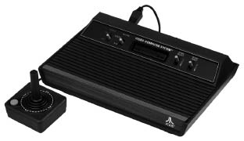

Karşımda yeni ve en iyi arkadaşım duruyordu. Bu öyle bir arkadaştı ki ne okul arkadaşlarım, ne mahalledekiler, ne de annem babam bana karşı bu denli sabırlı yaklaşmıştı. En yakın arkadaşım bilgisayara, istediğim gibi sorular sorabiliyor, anında cevap alıyor ve istersem aynı soruları defalarca tekrarlıyordum. Bilgisayarlar bozuk bile olsa bir komut yazdığımda gereken cevabı veriyordu. Hangi insan bunca sonu gelmez soru karşısında bu kadar akla zarar bir sabra sahip olabilirdi ki? Bu sihir gibi bir şeydi.
Artık bilgisayarın büyüsüne kapılmıştım. Evimizde bilgisayar olduğunu hayal ederek kendi kendime planlar yapıyordum. Babama biraz da umutsuzca bilgisayar istediğimi söylediğimde aldığım cevap “Biz ne bankayız, ne de para basıyoruz. Bilgisayar falan alamam” olmuştu. Bir bakıma haklıydı. Orta halli bir aileydik. Babam, amcamla birlikte deri işiyle uğraşıyordu. Zaten bilgisayar isteğimi umutsuzca söylememin sebebi babamın daha önceki tavırlarıydı. O dönemlerin favori oyun konsolu Sega’yı da yalvarmama rağmen almamıştı. Onun yerine aldığı Çin işi, televizyona bağlanan oyun konsollarından dört beş tane, joystick kontrollerinden ise belki ondan fazla eskitip bozmuştum. Bu da babamın nazarında benim elektronik eşya kredimin tükenmesine sebep olmuştu. Çin işi ucuz, kalitesiz parçaların sık sık bozulmasının faturası bana çıkmıştı.
Bizi hiçbir şeyden mahrum bırakmayan, o zamanların henüz yeni yeni yayılan havalı spor ayakkabılarına bile anlam verememesine rağmen para harcayan babam, bilgisayar konusuna bir türlü sıcak bakmıyordu. Hal böyleyken tek çarem bilgisayara kolayca erişimimin olabileceği yerleri düşünmekti. Eğer onlardan birini yanıma alamıyorsam, ben onların yanına gitmeliydim.

Tüm dünyada milyonlarca ucuz kopyası yapılan Atari oyun konsolu.
Bilgisayarla temasta olacağım yerlerden aklıma ilk gelen, deri atölyesiydi. Babam ile amcamın atölyesinde derilerin boyutunu ölçerek bu bilgileri etiketlere basan, adına “desi makinesi” dedikleri makinelerden bulunuyordu. Atölyeye babamı ziyaret etme bahanesiyle daha sık gitmeye başladım. Kimi zaman okulda hazırladığım disketleri de yanımda götürüp desi makinesinin bilgisayarını kurcalayarak vakit geçiriyordum. Bu mono ekranlı, deri tozuyla kaplı bilgisayar bile beni mutlu etmeye yetiyordu. Ama esas dünyamı değiştiren babamların muhasebe kayıtlarını tutmak için satın aldıkları bilgisayar oldu. Hem de öyle böyle değil; o zamanın şartlarında oldukça güçlü ve pahalı olan HP marka bir bilgisayardı. Üzerinde Windows 3.11 Workstation ile Ms-Dos 6.22 çalıştıran bu renkli monitörlü bilgisayar Netsis yazılımı üzerinde muhasebe tutulmasına imkân tanıyordu.
Küçükken alıştığım “takla atan araba” araştırmalarımı bilgisayara uyarlayınca beklediğimden farklı sonuçlar almıştım. Birkaç kere bilgisayarı çökerterek babamdan fırça yedikten sonra biraz da mecburiyetten rutin kullanımı kavramak zorunda kaldım. Hatta biraz da ilerleterek QBasic programlama dilini kullanarak ekranda renkli fontlarla yazılar, animasyonlar yaratan ufak programlar yazmaya başladım. Herhalde bu durum babama da biraz güven vermiş olacak ki artık bilgisayarı kurcalamama pek karışmıyordu. Diğer yandan ben halen büyük bir tutkuyla kendi bilgisayarımın olacağı günlerin hayalini kuruyordum. Bu bende o kadar saplantı halini almıştı ki Yeni Asır gazetesindeki bilgisayar firmalarına ait ilanları arayıp kafamda oluşturduğum ideal özelliklerdeki bilgisayarın fiyatını soruyordum. Dayanamayıp birkaç gün üst üste arayınca telefondaki bezmiş satıcıların “Yeter evladım arama sürekli! Bak sesini değiştiriyorsun tanıdım seni!” diye isyan etmeleri uzun sürmedi.
Geleneksel yazılı basında bilgisayarla ilgili çok materyal bulamayıp, ilan verenlerin de benimle konuşmak istememeleri üzerine başka arayışlara başladım. PC Magazine diye bir bilgisayar dergisi yayımlandığını duyduğumda çok şaşırmıştım. Bilgisayar ve bilgisayarla ilgili her türlü kaynağa ulaşma çabamda bu dergi benim için bir hazine olabilirdi. Sorduğum yirminci gazete bayisinde bulmuştum dergiyi. Açıp okumaya başladığımda ise aslında çok da fazla şey bilmediğim gerçeğiyle yüz yüze geldim. Derginin tamamı İngilizceden çeviriydi. Türkiye’de henüz kişisel bilgisayar pazarı oluşmak üzereyken bu yapılan yarım yamalak çeviriler benim bilgisayar kültürüme biraz ağır geldi. Tam anlamıyla anlamasam bile, aynı dergiyi ay içerisinde onlarca defa okuduğumu hatırlıyorum.
Okudukça kafamda bir şeyler canlanmaya başlamıştı ama kendi kendime çabalayıp öğrenmekten başka çarem yoktu. En zorlu sınavı ise bilgisayar dergisi disket içerisinde bir antivirüs programı verdiğinde yaşadım. Daha önce antivirüs kelimesini duymuştum ama nasıl kullanılacağı ya da ne işe yaradığına dair tam olarak bir fikrim yoktu.
O yaşlarda benim dünyamda her şeyi bilen, kültürlü biri olarak gördüğüm üst komşumuz Oya Abla’mın yanına gidip “Bu disketin içerisinde antivirüs varmış. Virüsleri nasıl temizliyor acaba bu?” dediğimi hatırlıyorum. Onun bana verdiği cevap ise “Hımm, belki de disketin üzerindeki etiketin bir özelliğidir! Bilgisayara takınca virüsleri temizliyordur” gibi kendince oldukça mantıklı görünen bir fikir sunmuştu. Her ne kadar bugün komik gelse de o günün şartlarında bu ihtimal üzerinde de düşündüğümü inkâr edemem.